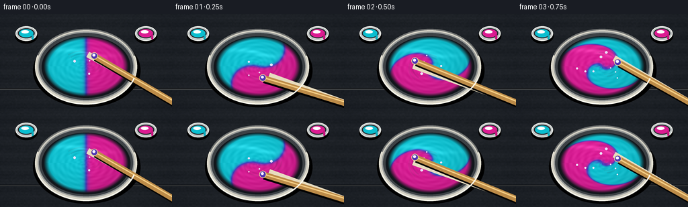
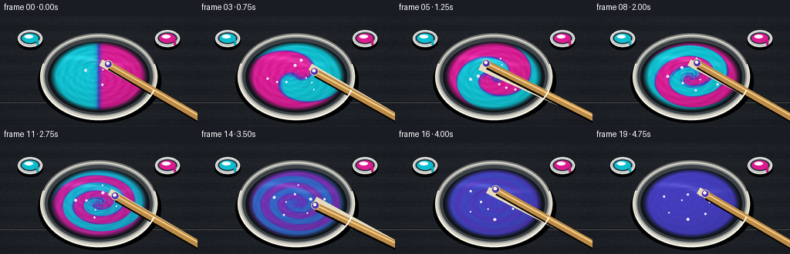

CODING AGENTS AS PIXEL WORLD MODELS
traex/GPT-5.6-Sol · phygen_124
点击播放 · 原生 RGB 像素
逐轮保存的候选
回放视频、检查图与代码变化。
每份候选均可单独播放。实际图片检查记录在下方工具轨迹中。
候选 01播放与检查图
点击播放 · 原生 RGB 像素


展开代码变化
--- 上一保存版本
+++ 本次保存版本
@@ -0,0 +1,180 @@
+from pathlib import Path
+import json, math
+import numpy as np
+from PIL import Image, ImageDraw, ImageFilter
+from artifact_io import save
+
+# Deterministic, supersampled procedural animation of two viscous paints being stirred.
+ROOT = Path(__file__).resolve().parent
+spec = json.loads((ROOT / 'task_spec.json').read_text())
+W, H, N = spec['width'], spec['height'], spec['frames']
+S = 4
+w, h = W*S, H*S
+rng = np.random.default_rng(124)
+
+# Coordinates used by the large paint surface.
+yy, xx = np.mgrid[0:h, 0:w]
+cx, cy = 128*S, 78*S
+rx, ry = 63*S, 45*S
+X = (xx-cx)/rx
+Y = (yy-cy)/ry
+R = np.sqrt(X*X+Y*Y)
+TH = np.arctan2(Y, X)
+inside = R <= 1.0
+edge_aa = np.clip((1.0-R)*S*2.0, 0, 1)
+
+# Static wood/stone worktop with fine grain and a soft vignette.
+noise_small = rng.normal(0, 1, (h//8+1, w//8+1))
+noise = np.asarray(Image.fromarray(np.uint8(np.clip(noise_small*28+128,0,255))).resize((w,h), Image.Resampling.BICUBIC), float)-128
+fine = rng.normal(0, 1, (h,w))
+rad = ((xx-w*.5)/(w*.72))**2 + ((yy-h*.48)/(h*.9))**2
+base = np.empty((h,w,3), float)
+base[:,:,0] = 31 + noise*.045 + fine*1.2 - 7*rad
+base[:,:,1] = 35 + noise*.040 + fine*1.2 - 7*rad
+base[:,:,2] = 40 + noise*.050 + fine*1.4 - 6*rad
+# horizontal slate/wood grain
+base += (2.0*np.sin(yy/13.0) + 0.9*np.sin(yy/3.1))[:,:,None]
+base = np.uint8(np.clip(base,0,255))
+
+
+def ellipse(draw, box, fill, outline=None, width=1):
+ draw.ellipse(tuple(int(v*S) for v in box), fill=fill, outline=outline, width=max(1,int(width*S)))
+
+def smoothstep(a,b,x):
+ z=np.clip((x-a)/(b-a),0,1)
+ return z*z*(3-2*z)
+
+def draw_paint_pot(im, x, y, color, label_color):
+ """Small symmetric source cups: visual evidence of equal cyan/magenta portions."""
+ d=ImageDraw.Draw(im, 'RGBA')
+ # cast shadow
+ ellipse(d,(x-17,y-10,x+17,y+13),(0,0,0,80))
+ ellipse(d,(x-16,y-13,x+16,y+9),(195,200,199,255),(245,246,240,255),1.2)
+ ellipse(d,(x-12.5,y-10,x+12.5,y+5),(42,47,51,255))
+ ellipse(d,(x-10.7,y-8.5,x+10.7,y+3.5),color)
+ ellipse(d,(x-7.5,y-7,x+4,y-2.2),(255,255,255,60))
+ # matching drip on lip
+ d.rounded_rectangle((int((x+8)*S),int((y-1)*S),int((x+11)*S),int((y+7)*S)), radius=2*S, fill=label_color)
+
+
+def paint_color(p):
+ """Subtractive-looking cyanâindigoâmagenta palette; 50/50 is rich blue-violet."""
+ cyan = np.array([18., 195., 211.])
+ mid = np.array([68., 62., 190.])
+ mag = np.array([219., 31., 150.])
+ q=np.clip(p,0,1)
+ left=np.clip(q*2,0,1)[...,None]
+ right=np.clip((q-.5)*2,0,1)[...,None]
+ rgb=cyan*(1-left)+mid*left
+ rgb=rgb*(1-right)+mag*right
+ return rgb
+
+frames=[]
+for k in range(N):
+ t=k/(N-1)
+ im=Image.fromarray(base.copy(), 'RGB').convert('RGBA')
+ d=ImageDraw.Draw(im,'RGBA')
+
+ # Quiet seams/grain in the tabletop.
+ d.line([(0,111*S),(w,111*S)], fill=(12,14,17,70), width=S)
+ d.line([(0,112*S),(w,112*S)], fill=(74,76,76,22), width=S)
+
+ draw_paint_pot(im, 39, 31, (10,190,207,255), (12,170,188,255))
+ draw_paint_pot(im, 217, 31, (220,27,145,255), (198,22,127,255))
+ d=ImageDraw.Draw(im,'RGBA')
+
+ # Bowl's broad, grounded shadow.
+ ellipse(d,(49,29,209,139),(0,0,0,78))
+ ellipse(d,(52,22,204,135),(214,211,198,255),(247,244,229,255),1.2)
+ # Ceramic shading rings: a readable raised rim.
+ ellipse(d,(56,26,200,130),(150,153,151,255))
+ ellipse(d,(58,28,198,128),(61,66,70,255))
+ ellipse(d,(62,33,194,125),(17,22,27,255))
+
+ # Fluid advection: backtrace the initial vertical split through a fast vortex.
+ # Early frames retain two equal pools; middle frames form fine spiral folds.
+ stir = smoothstep(0.0, .62, t)
+ angle_back = TH - (10.8*math.pi*t)*(1.08-R*.72) - .34*np.sin(2*TH-7*t)*(stir)
+ source = R*np.cos(angle_back)
+ source += stir*(.10*np.sin(5*angle_back + 16*R - 17*t) + .045*np.sin(11*angle_back-8*R))
+ width = .030 + .025*stir
+ pigment = 1/(1+np.exp(np.clip(-source/width,-50,50)))
+ # Turbulent folding followed by genuine homogenization to exactly 50/50.
+ homogeneous = smoothstep(.48,.93,t)
+ pigment = .5 + (pigment-.5)*(1-homogeneous)**1.28
+ if k >= 18:
+ pigment[:] = .5
+
+ rgb=paint_color(pigment)
+ # Thick glossy paint: concentric shear ridges, shallow folds, and moving reflections.
+ ridges = (np.sin(34*R - 4.5*TH + 20*t) + .55*np.sin(55*R + 7*TH - 26*t))
+ ridge_amp=(1-homogeneous)*3.7 + 1.2
+ rgb += ridges[...,None]*ridge_amp
+ # illumination from upper left and a glossy curved highlight band
+ lighting = 1.0 + .055*(-.55*X-.75*Y) - .08*R**2
+ sheen = np.exp(-((Y+.44+.10*np.sin(TH*2))/.075)**2) * np.exp(-((X+.12)/.72)**2)
+ rgb = rgb*lighting[...,None] + sheen[...,None]*25
+ arr=np.asarray(im.convert('RGB')).astype(float)
+ a=(edge_aa*inside)[...,None]
+ arr=arr*(1-a)+np.clip(rgb,0,255)*a
+ im=Image.fromarray(np.uint8(np.clip(arr,0,255)), 'RGB').convert('RGBA')
+
+ # Surface swirl/wake lines. All are clipped to the paint ellipse.
+ wake=Image.new('RGBA',(w,h),(0,0,0,0)); wd=ImageDraw.Draw(wake,'RGBA')
+ phase = -1.05 + k*2.33
+ # Several tightly bent wakes around the moving stir point.
+ for j in range(3):
+ pts=[]
+ for q in np.linspace(-1.2,1.05,70):
+ rr=(29-j*5 + 6*q)*S
+ ang=phase-q*(1.3+.15*j)
+ pts.append((cx+rr*math.cos(ang),cy+rr*.72*math.sin(ang)))
+ alpha=int((85-16*j)*(1-.45*homogeneous))
+ wd.line(pts, fill=(245,231,255,alpha), width=max(S,int((2.1-j*.35)*S)), joint='curve')
+ # dark trough behind the implement makes the material look displaced
+ contact=(cx+25*S*math.cos(phase), cy+18*S*math.sin(phase))
+ trail=[]
+ for q in np.linspace(0,.70,32):
+ ang=phase-q*2.0
+ rr=(24+7*q)*S
+ trail.append((cx+rr*math.cos(ang),cy+rr*.72*math.sin(ang)))
+ wd.line(trail, fill=(25,21,91,85), width=2*S, joint='curve')
+ # clip wakes to paint mask
+ mask=Image.fromarray(np.uint8(inside*255),'L')
+ clipped=Image.new('RGBA',(w,h),(0,0,0,0)); clipped.paste(wake,(0,0),Image.composite(wake,Image.new('RGBA',(w,h)),mask))
+ im=Image.alpha_composite(im,clipped)
+
+ d=ImageDraw.Draw(im,'RGBA')
+ # A few tiny air bubbles, entrained and rotating with the vortex.
+ bubble_count=8 if k>2 else 4
+ for b in range(bubble_count):
+ br=.25+.065*b
+ ba=phase*(1.1-.035*b)+b*2.399
+ bx=128+br*53*math.cos(ba); by=78+br*37*math.sin(ba)
+ rr_b=(1.0+(b%3)*.45)
+ ellipse(d,(bx-rr_b,by-rr_b,bx+rr_b,by+rr_b),(235,224,255,55),(255,255,255,100),.45)
+
+ # Stirring stick entering from lower-right; its submerged tip races around the bowl.
+ px,py=contact[0]/S,contact[1]/S
+ hx,hy=264,135
+ # motion ghost emphasizes vigorous stirring without obscuring color change
+ prev_phase=phase-0.42
+ gpx=128+25*math.cos(prev_phase); gpy=78+18*math.sin(prev_phase)
+ d.line([(int(gpx*S),int(gpy*S)),(hx*S,hy*S)],fill=(231,220,191,30),width=9*S)
+ # implement shadow
+ d.line([(int((px+2)*S),int((py+3)*S)),(int((hx+2)*S),int((hy+3)*S))],fill=(0,0,0,95),width=10*S)
+ d.line([(int(px*S),int(py*S)),(hx*S,hy*S)],fill=(188,139,72,255),width=9*S)
+ d.line([(int((px-.3)*S),int((py-.8)*S)),(hx*S,int((hy-2)*S))],fill=(244,205,132,210),width=2*S)
+ # rounded submerged end, coated in the blended paint
+ ellipse(d,(px-5.3,py-5.3,px+5.3,py+5.3),(78,54,179,255),(236,207,148,230),1)
+ ellipse(d,(px-2.8,py-3.2,px+1.5,py+1.0),(255,245,255,90))
+
+ # Rim foreground highlight re-establishes bowl depth over the paint and stick edge.
+ arcbox=tuple(int(v*S) for v in (52,22,204,135))
+ d.arc(arcbox, 18, 163, fill=(255,252,236,220), width=2*S)
+ d.arc(arcbox, 198, 343, fill=(112,114,113,180), width=2*S)
+
+ out=im.convert('RGB').resize((W,H),Image.Resampling.LANCZOS)
+ frames.append(np.asarray(out,dtype=np.uint8))
+
+save(np.stack(frames), ROOT)
可观测工具轨迹
实际执行的命令与返回图片。
命令 1exit 0
/bin/bash -lc "ls -la && printf '\\n--- prompt.txt ---\\n' && cat prompt.txt && printf '\\n--- GENERATION_RULES.md ---\\n' && cat GENERATION_RULES.md && printf '\\n--- task_spec.json ---\\n' && cat task_spec.json"
命令 2exit 0
/bin/bash -lc "find . -maxdepth 2 -type f -printf '%p\\n' | sort"
命令 3exit 0
/bin/bash -lc "sed -n '1,240p' artifact_io.py"
命令 4exit 0
/bin/bash -lc "python - <<'PY'
try:
import scipy; print('scipy',scipy.__version__)
except Exception as e: print('no scipy',e)
PY"命令 5exit 0
/bin/bash -lc "cat > generate.py <<'PY'
from pathlib import Path
import json, math
import numpy as np
from PIL import Image, ImageDraw, ImageFilter
from artifact_io import save
# Deterministic, supersampled procedural animation of two viscous paints being stirred.
ROOT = Path(__file__).resolve().parent
spec = json.loads((ROOT / 'task_spec.json').read_text())
W, H, N = spec['width'], spec['height'], spec['frames']
S = 4
w, h = W*S, H*S
rng = np.random.default_rng(124)
# Coordinates used by the large paint surface.
yy, xx = np.mgrid[0:h, 0:w]
cx, cy = 128*S, 78*S
rx, ry = 63*S, 45*S
X = (xx-cx)/rx
Y = (yy-cy)/ry
R = np.sqrt(X*X+Y*Y)
TH = np.arctan2(Y, X)
inside = R <= 1.0
edge_aa = np.clip((1.0-R)*S*2.0, 0, 1)
# Static wood/stone worktop with fine grain and a soft vignette.
noise_small = rng.normal(0, 1, (h//8+1, w//8+1))
noise = np.asarray(Image.fromarray(np.uint8(np.clip(noise_small*28+128,0,255))).resize((w,h), Image.Resampling.BICUBIC), float)-128
fine = rng.normal(0, 1, (h,w))
rad = ((xx-w*.5)/(w*.72))**2 + ((yy-h*.48)/(h*.9))**2
base = np.empty((h,w,3), float)
base[:,:,0] = 31 + noise*.045 + fine*1.2 - 7*rad
base[:,:,1] = 35 + noise*.040 + fine*1.2 - 7*rad
base[:,:,2] = 40 + noise*.050 + fine*1.4 - 6*rad
# horizontal slate/wood grain
base += (2.0*np.sin(yy/13.0) + 0.9*np.sin(yy/3.1))[:,:,None]
base = np.uint8(np.clip(base,0,255))
def ellipse(draw, box, fill, outline=None, width=1):
draw.ellipse(tuple(int(v*S) for v in box), fill=fill, outline=outline, width=max(1,int(width*S)))
def smoothstep(a,b,x):
z=np.clip((x-a)/(b-a),0,1)
return z*z*(3-2*z)
def draw_paint_pot(im, x, y, color, label_color):
\"\"\"Small symmetric source cups: visual evidence of equal cyan/magenta portions.\"\"\"
d=ImageDraw.Draw(im, 'RGBA')
# cast shadow
ellipse(d,(x-17,y-10,x+17,y+13),(0,0,0,80))
ellipse(d,(x-16,y-13,x+16,y+9),(195,200,199,255),(245,246,240,255),1.2)
ellipse(d,(x-12.5,y-10,x+12.5,y+5),(42,47,51,255))
ellipse(d,(x-10.7,y-8.5,x+10.7,y+3.5),color)
ellipse(d,(x-7.5,y-7,x+4,y-2.2),(255,255,255,60))
# matching drip on lip
d.rounded_rectangle((int((x+8)*S),int((y-1)*S),int((x+11)*S),int((y+7)*S)), radius=2*S, fill=label_color)
def paint_color(p):
\"\"\"Subtractive-looking cyanâindigoâmagenta palette; 50/50 is rich blue-violet.\"\"\"
cyan = np.array([18., 195., 211.])
mid = np.array([68., 62., 190.])
mag = np.array([219., 31., 150.])
q=np.clip(p,0,1)
left=np.clip(q*2,0,1)[...,None]
right=np.clip((q-.5)*2,0,1)[...,None]
rgb=cyan*(1-left)+mid*left
rgb=rgb*(1-right)+mag*right
return rgb
frames=[]
for k in range(N):
t=k/(N-1)
im=Image.fromarray(base.copy(), 'RGB').convert('RGBA')
d=ImageDraw.Draw(im,'RGBA')
# Quiet seams/grain in the tabletop.
d.line([(0,111*S),(w,111*S)], fill=(12,14,17,70), width=S)
d.line([(0,112*S),(w,112*S)], fill=(74,76,76,22), width=S)
draw_paint_pot(im, 39, 31, (10,190,207,255), (12,170,188,255))
draw_paint_pot(im, 217, 31, (220,27,145,255), (198,22,127,255))
d=ImageDraw.Draw(im,'RGBA')
# Bowl's broad, grounded shadow.
ellipse(d,(49,29,209,139),(0,0,0,78))
ellipse(d,(52,22,204,135),(214,211,198,255),(247,244,229,255),1.2)
# Ceramic shading rings: a readable raised rim.
ellipse(d,(56,26,200,130),(150,153,151,255))
ellipse(d,(58,28,198,128),(61,66,70,255))
ellipse(d,(62,33,194,125),(17,22,27,255))
# Fluid advection: backtrace the initial vertical split through a fast vortex.
# Early frames retain two equal pools; middle frames form fine spiral folds.
stir = smoothstep(0.0, .62, t)
angle_back = TH - (10.8*math.pi*t)*(1.08-R*.72) - .34*np.sin(2*TH-7*t)*(stir)
source = R*np.cos(angle_back)
source += stir*(.10*np.sin(5*angle_back + 16*R - 17*t) + .045*np.sin(11*angle_back-8*R))
width = .030 + .025*stir
pigment = 1/(1+np.exp(np.clip(-source/width,-50,50)))
# Turbulent folding followed by genuine homogenization to exactly 50/50.
homogeneous = smoothstep(.48,.93,t)
pigment = .5 + (pigment-.5)*(1-homogeneous)**1.28
if k >= 18:
pigment[:] = .5
rgb=paint_color(pigment)
# Thick glossy paint: concentric shear ridges, shallow folds, and moving reflections.
ridges = (np.sin(34*R - 4.5*TH + 20*t) + .55*np.sin(55*R + 7*TH - 26*t))
ridge_amp=(1-homogeneous)*3.7 + 1.2
rgb += ridges[...,None]*ridge_amp
# illumination from upper left and a glossy curved highlight band
lighting = 1.0 + .055*(-.55*X-.75*Y) - .08*R**2
sheen = np.exp(-((Y+.44+.10*np.sin(TH*2))/.075)**2) * np.exp(-((X+.12)/.72)**2)
rgb = rgb*lighting[...,None] + sheen[...,None]*25
arr=np.asarray(im.convert('RGB')).astype(float)
a=(edge_aa*inside)[...,None]
arr=arr*(1-a)+np.clip(rgb,0,255)*a
im=Image.fromarray(np.uint8(np.clip(arr,0,255)), 'RGB').convert('RGBA')
# Surface swirl/wake lines. All are clipped to the paint ellipse.
wake=Image.new('RGBA',(w,h),(0,0,0,0)); wd=ImageDraw.Draw(wake,'RGBA')
phase = -1.05 + k*2.33
# Several tightly bent wakes around the moving stir point.
for j in range(3):
pts=[]
for q in np.linspace(-1.2,1.05,70):
rr=(29-j*5 + 6*q)*S
ang=phase-q*(1.3+.15*j)
pts.append((cx+rr*math.cos(ang),cy+rr*.72*math.sin(ang)))
alpha=int((85-16*j)*(1-.45*homogeneous))
wd.line(pts, fill=(245,231,255,alpha), width=max(S,int((2.1-j*.35)*S)), joint='curve')
# dark trough behind the implement makes the material look displaced
contact=(cx+25*S*math.cos(phase), cy+18*S*math.sin(phase))
trail=[]
for q in np.linspace(0,.70,32):
ang=phase-q*2.0
rr=(24+7*q)*S
trail.append((cx+rr*math.cos(ang),cy+rr*.72*math.sin(ang)))
wd.line(trail, fill=(25,21,91,85), width=2*S, joint='curve')
# clip wakes to paint mask
mask=Image.fromarray(np.uint8(inside*255),'L')
clipped=Image.new('RGBA',(w,h),(0,0,0,0)); clipped.paste(wake,(0,0),Image.composite(wake,Image.new('RGBA',(w,h)),mask))
im=Image.alpha_composite(im,clipped)
d=ImageDraw.Draw(im,'RGBA')
# A few tiny air bubbles, entrained and rotating with the vortex.
bubble_count=8 if k>2 else 4
for b in range(bubble_count):
br=.25+.065*b
ba=phase*(1.1-.035*b)+b*2.399
bx=128+br*53*math.cos(ba); by=78+br*37*math.sin(ba)
rr_b=(1.0+(b%3)*.45)
ellipse(d,(bx-rr_b,by-rr_b,bx+rr_b,by+rr_b),(235,224,255,55),(255,255,255,100),.45)
# Stirring stick entering from lower-right; its submerged tip races around the bowl.
px,py=contact[0]/S,contact[1]/S
hx,hy=264,135
# motion ghost emphasizes vigorous stirring without obscuring color change
prev_phase=phase-0.42
gpx=128+25*math.cos(prev_phase); gpy=78+18*math.sin(prev_phase)
d.line([(int(gpx*S),int(gpy*S)),(hx*S,hy*S)],fill=(231,220,191,30),width=9*S)
# implement shadow
d.line([(int((px+2)*S),int((py+3)*S)),(int((hx+2)*S),int((hy+3)*S))],fill=(0,0,0,95),width=10*S)
d.line([(int(px*S),int(py*S)),(hx*S,hy*S)],fill=(188,139,72,255),width=9*S)
d.line([(int((px-.3)*S),int((py-.8)*S)),(hx*S,int((hy-2)*S))],fill=(244,205,132,210),width=2*S)
# rounded submerged end, coated in the blended paint
ellipse(d,(px-5.3,py-5.3,px+5.3,py+5.3),(78,54,179,255),(236,207,148,230),1)
ellipse(d,(px-2.8,py-3.2,px+1.5,py+1.0),(255,245,255,90))
# Rim foreground highlight re-establishes bowl depth over the paint and stick edge.
arcbox=tuple(int(v*S) for v in (52,22,204,135))
d.arc(arcbox, 18, 163, fill=(255,252,236,220), width=2*S)
d.arc(arcbox, 198, 343, fill=(112,114,113,180), width=2*S)
out=im.convert('RGB').resize((W,H),Image.Resampling.LANCZOS)
frames.append(np.asarray(out,dtype=np.uint8))
save(np.stack(frames), ROOT)
PY
python generate.py
ls -lh pixels.npz inspection.png transition_check.png index.html frames/00.png frames/19.png"视觉工具实际返回图片 1

视觉工具实际返回图片 2

保存候选 1 份；完成命令 5 次；可验证图片返回 2 张。原始 API 响应与完整日志保留在本地。